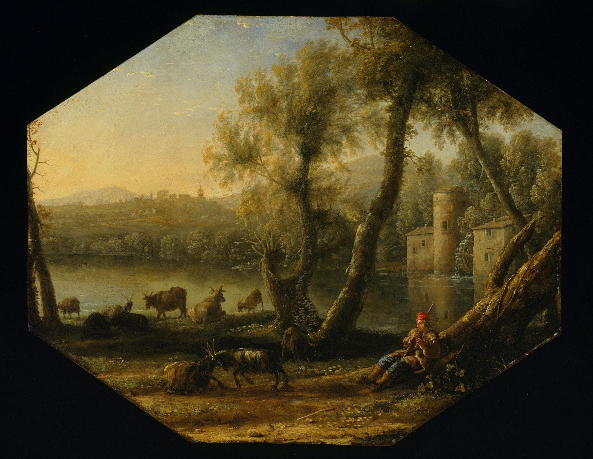

Paisagem pastoral
Claude Lorrain · c. 1636–1637
A luz conduz o olhar por uma natureza idealizada, entre árvores, água e horizonte.
Ver obra e fonte ↗O extraordinário
está no olhar.
Um encontro com a arte que atravessa o tempo.
Uma pausa para ver o mundo de outra forma.

Entre a luz e a paisagem, existe um lugar onde o tempo desacelera.
Três percursos. Infinitas maneiras de olhar.
A Forma nasce de uma ideia simples: a arte merece tempo. Tempo para observar os detalhes, se perder nas paisagens e encontrar algo de si em cada obra.
Esta galeria imaginária reúne obras em domínio público em uma experiência feita para a descoberta. Sem pressa. No seu ritmo.
Encontre seu percursoClaude Lorrain · c. 1636–1637
A luz conduz o olhar por uma natureza idealizada, entre árvores, água e horizonte.
Ver obra e fonte ↗Leonardo da Vinci · século XVI
Um olhar que nos encontra. Um sorriso que convida a demorar mais um instante.
Ver obra e fonte ↗Claude Lorrain · 1635–1637
A vida acontece em pequenos gestos, quase silenciosos, na amplitude da paisagem.
Ver obra e fonte ↗